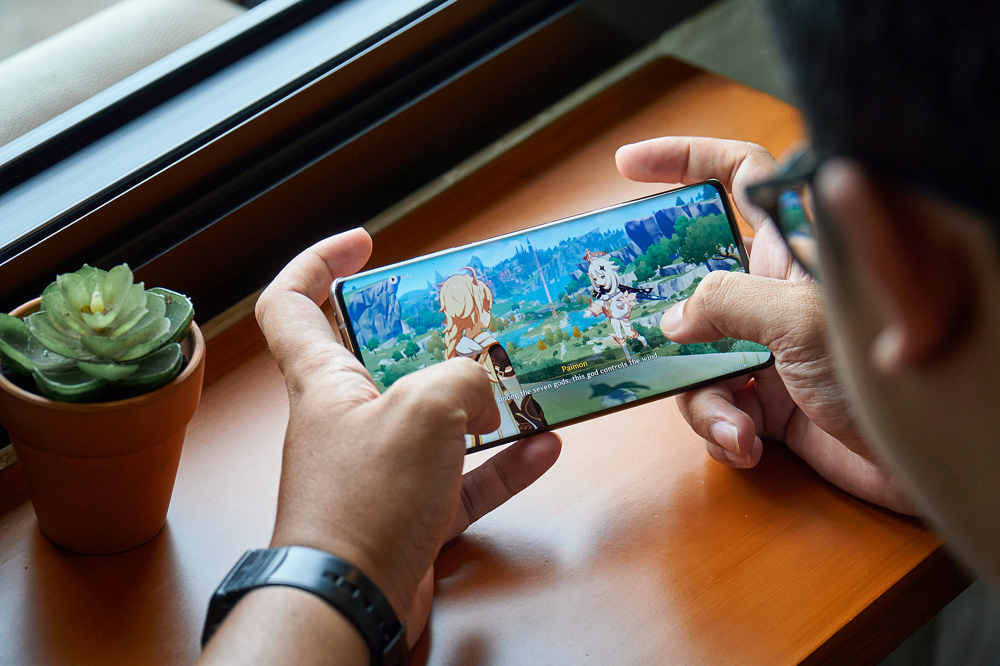

22 OCT 2024 | BY EMILY LOH
A person playing through the beginning story of Genshin Impact on their phone device
Imagine this: Friday afternoon, and you're just an hour away from wrapping up work and starting your weekend. Suddenly, your phone rings—it’s your bank, urgently informing you about an overdue bill of $20,000 that’s been unpaid for the past three months. Weird, you have no recollection of spending that much recently. For Pete's sake, you could pay a year of tuition abroad with that money! What could that sum of money be from? With a little digging, the horrifying truth comes to light: it’s no scam—your child has been swiping away on your credit card.
This was no daydream for Lim Cheng Mong when he found out his daughter had spent so much on her video game, Genshin Impact, to fund her in-game team and increase her collection. And Lim isn’t the only parent going through this. Youth worldwide have their hands on seemingly innocent and free video games that entice them to spend with microtransactions. Game titles like Pokémon Unite, Overwatch, Star Wars Battlefront II, Hearthstone, and FIFA, have long been promoted with their ability to bring a rush of dopamine to their players with loot box mechanics but new studies arise every year to bring up the consequences of these games on young minds.
In the 21st century, we are now dealing with child "gamblers".
The Supposed Box of Delights
To understand the issue at hand, we need to first understand what loot boxes even are. The history of loot boxes can be traced back to the early days of trading cards. At your local toy or collectible store, you could find wrapped packages of, for example, Pokémon cards for your fun. You would buy one, open it up, and sigh at the fact that you didn’t get a Mewtwo to improve your deck. Depending on a number of factors, you might buy another one, open it up, and either feel disappointed or ecstatic.
This magic of surprise is not new for 2024 and has been around since the early 2000s. Pokémon was not the only one to use this. Nexon, a video game company, developed the game MapleStory in 2003 that hit South Korea like a storm, and earned hundreds of millions in a decade of success. Following them, FIFA introduced loot boxes in 2009 to make players build their Ultimate Team and, many years later, the super success of Overwatch loot boxes amassed a profit of over $5 billion just from in-game purchases in its years.
There is no denying that large corporations have been using this tactic to earn money from their player base for many years. But as studies have shown over the years, this business model is more than just a money trap—it's changing the way our brains work.
Where Has My Brain Gone?
Around the age of 11, I often found myself in front of the family computer every weekend, gaming away. One of my favorite games as a child was Fantage, an MMORPG game set in a virtual world. I vividly remember playing every minigame I could find and collecting a set number of Gems, submitting them to a wizard to receive a random cosmetic for my avatar. Many kids find it exciting to play, earn, and unlock the outfits or items they’ve been eyeing for weeks. At that age, they often have no idea of the deeper impact these games can have. And, even without pocket money, kids like me would continue to play until they got what they wanted. I went as far as planning on school days how to optimize my time on the weekend to get the best return on Gems with the easiest and fastest minigames. Extreme, right?
Fashion show minigame on Fantage as users flaunt their coolest outfits and rare finds
As Daniel Mazon from Medium mentions, this game mechanic “helps to reinforce spending more time and money into the game to chase a similar release and feelings of pleasure.” And I clearly did not understand that as a child. Players would gawk at each other’s rare finds, feeling FOMO as they watched ‘pay to win’ players strut the streets in cool hairdos and sleek ‘rides’. Like many other players, I spent hours styling my avatar, just wanting to be as cool as the other kids—not knowing that I was feeding a growing sense of greed in my brain. On some level, we as kids unknowingly submitted ourselves to the dopamine kick and let self-control leave the room.
Your Time Is Their Money
I never really learned from that experience as a kid because soon after I grew too old for that game, I moved on to another game. While some K-pop fans gambled away their savings buying albums to pull their favorite photocards, I was sinking countless hours into mobile games, gambling away my time to earn cards featuring my favorite singers.
Both instances are of poor responsibility yet I justified my actions: I never spent even a single dollar on these games! But holding back on in-game purchases doesn’t stop the fall into a spiral of loot boxes, constantly playing to earn enough for a new package. Like other players, I started begging to the “RNG gods” for the best luck. Instead of eating lunch, I fixated on my phone screen as my food grew cold. I would spend less than fifteen minutes eating, using the rest of my school lunch break to play as many game levels as possible.
A card pack of rare to common cards from the game Rhythm Hive for some Korean pop artists
I’d use my in-game currency to buy a new card pack every few days. And when I was blessed with rare cards, I knew I had to try again! Go again and purchase another pack with the currency I earned after a whole week of continuous gaming. Most games like this one would reward players for playing a long time or beating a certain level, participating in a special event or even just logging in. I was seriously sucked into the operant conditioning that had me in a mental chokehold. These games feature small rewards on the loot boxes, rewards for playing the game, and surprise rewards for random events to keep you playing and coming back, even if you don’t spend a single cent.
People who spend on microtransactions can ultimately fall into a black hole of spending and pulling money out of hard-earned savings as they continue to endlessly play, even if they initially resisted.
Your Time Is Their Money
“Let’s stop playing now.”
After spending hours or hundreds of dollars on these games, most people really can’t let go of the game. It would be a waste to throw away the game that holds the results of our resources, right? The term sunk-cost fallacy describes our inability to let go of something we’ve spent so many resources on even if we know letting go would be better for our mind and wallet. After committing so much to the game, letting go is far from easy. The pity system used in games like Genshin Impact takes advantage of this psychology and invites us to come back to the game to continue trying for the reward.
To illustrate the concept of a pity system, think of it like a scratch-off lottery ticket. Each time you scratch, you pay a fee, and although you may not win every time, the more you scratch, the closer you get to a guaranteed reward. Essentially, once you've scratched all the boxes or reached a certain number of attempts, you are assured of receiving the largest possible prize. This system encourages players to keep trying, as they know that persistence will eventually lead to a rewarding outcome.
Gacha systems establish this pity system and encourage users to keep spending as they get closer to a higher possibility of getting the best reward. This causes users to keep going, knowing that the chances are increasing and they get closer to their goal even if their money steadily decreases.
To make things even worse, games often have a rotation system that causes players to save up or spend now. If this week your favorite character is being released and next week your second favorite character is also being released, you might feel interested in spending both weeks to attain the characters. Having that level of anticipation for your guaranteed item as your probability increases or that feeling of fear for your favorite character to be rotated out soon really keeps your eyes and wallet peeled open for the game constantly. And, at this point, many players understand the feeling of being “in too deep” and not having the courage or self-control to truly let go.
Returning Our Self-Control
As I’ve grown older and reached my early twenties, I’ve come to realize that not all games are worth my time and that, in the long run, a lot of these heavy grinding games that involve capitalizing on the element of surprise aren't all that fun. But I’ve also seen the consequences of my past habits.
I’ve had to stop myself numerous times from buying blind boxes to decorate my barren study area with. When I find myself bored with the entertainment on my phone, I redownload old gacha games and play for a week before snapping out of it and deleting the game. And, if all that was too much of my time and money, I would resort to watching YouTubers and streamers open up blind boxes or play gacha games to remind my brain of what the dopamine kick feels like. While my seemingly innocent gambling habits haven't impacted my wallet yet, it's scary to see how poor choices could eventually escalate.
Now, loot boxes and gacha habits don’t necessarily cause future gambling issues. There are many reasons as to why someone may start making poor financial decisions by gambling. You could argue that microtransactions purchase in-game items for fun and enjoyment, and are not betting on the return of more money. However, having a habit of overspending on game microtransactions could be a poor financial decision in itself that makes us lose our self-control.
We can’t entirely deny that letting go of our control in games isn’t possibly tied to future gambling habits. Especially if you view these purchases as a way to come up on top and win the game, being careful about your spending habits is the most important. Jason Osborne of Forbes mentions the importance of teaching some financial literacy to the youth and keeping an eye out for anything alarming. Children are all over the internet now and often do not understand the weight of a few tens of dollars but letting them have that financial freedom must come with some responsibility.
Some countries have taken this issue to law and implemented bans on certain games. While this doesn’t stop the youth in many ways, the bans create a statement to the video game developers and keep awareness existing for children, youth, adults, and other technology users. The Belgium Gaming Commission found that these games played around “chance” which is a core element of gambling. Hence, they have pulled in bans for loot box purchases. This news also allegedly has led Pokémon Unite to be discontinued in Belgium and the Netherlands, and, I would suppose, be a pushing factor as to why Overwatch opened up Overwatch 2 with no loot boxes and replaced them with a battle pass system. Countries all over the world such as Austria and Germany have implemented more restrictions to prevent children from loot boxes and control transferrable looted goods from actual gambling. Other countries like South Korea have only done as much as putting a warning or disclaimer label on games.
But awareness is key. We must teach ourselves and future generations the value of money and how our choices shape our financial well-being. Spending on little things that bring us joy—whether it's a loot box, the latest iPhone, a blind box figurine, or a TikTok trend that seems like a steal—can be harmless in moderation. However, we must be mindful not to let these small purchases take control. Before the youth step into adulthood and earn their own money, they need to learn how to prioritize their spending, save for necessities, and plan for the future. It's about finding a balance without letting the rush of dopamine and instant gratification lead to a spiral of poor choices. We have to take charge of our self-control and ensure our happiness isn't fleeting, but built on a foundation of smart choices.